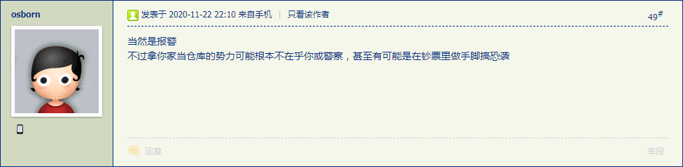
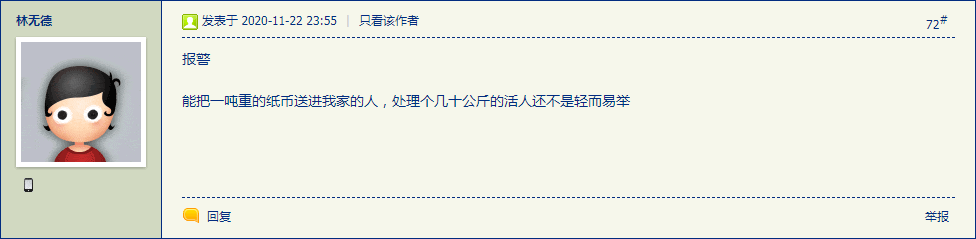
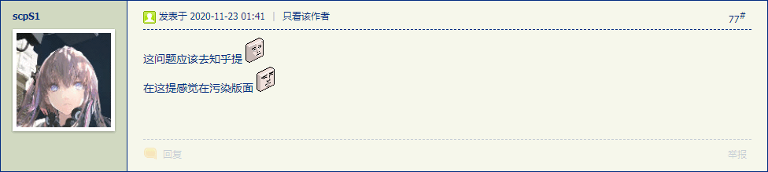
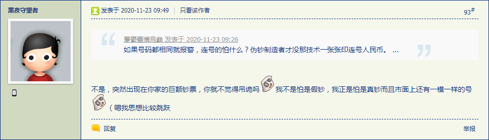
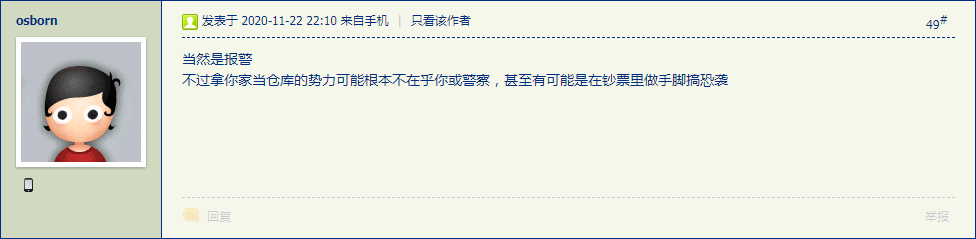
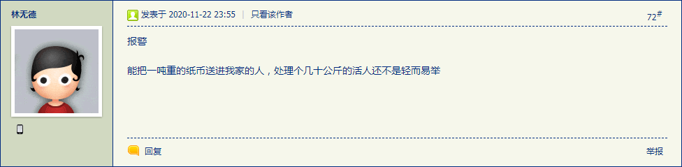
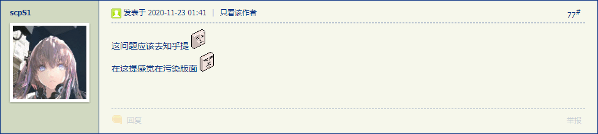
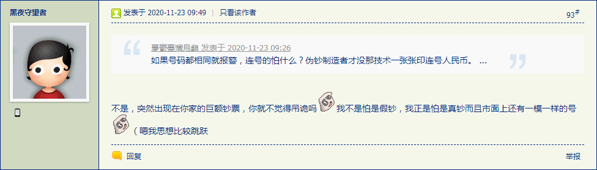

刚爬起来酒劲还在头昏脑胀，上网乱转发现国际化大都市「华语第一精日论坛」之上出现了一条色目含量甚高的重要情报：
你的房间凭空出现1亿现金，如何处理？ 







可以用作素材。
简单说，第六篇设定《马耳他护哔骑士团》当中已经出现了洗钱相关内容，剧情安排为连“十九年七闰”都不知道的月神教会从中东渗透欧洲的地下资金支持，虽然很小心的选择了「十字军本币」克鲁塞罗，但是计划没有变化快，没想到圣殿骑士团被做掉了。于是这些黑钱又见不得光了，只要在市面上出现，一定会被盯上，角色哈里运气好碰上了「自己人」而已。
在那实体贵金属货币的年代，洗钱还是比较容易的，通常重铸就行。第九篇设定《有子七人莫慰母心》当中提到了「伪造杜卡特」，实际上杜卡特流行的原因就是便于铸造，随便谁家出品只要成色重量足够就能流通。第十七篇设定《冠由下生乱自上作》当中直接出现了私家铸币，「标准合法高俅」与名为「金坷垃」的量产银豆，还直说「夹带」字眼毫不掩饰大手情报机构活动轨迹。
而具体到刚补完的第十八篇，更是提到了「境外走私集团的内应」，可以结合在《异闻录》《设定集》两边都发过牢骚的第一手素材，安排为「毒品」「人口」「军火」三个部门，提供黑钱把买办代理人送上主席台。不惮以最大的恶意揣测，「一边一个一边仨」的战略布局就是这个目的，工具人各安其位各尽其责，革命只有分工不同没有高低贵贱之分。
在《异闻录》那边已经出现了全城戒严情况下驾驶军牌警牌交通工具到处如入无人之境的情节了，而按照「天降横财」爽文套路发展的情节就是《百万英镑》，这里不再重复。至于为啥非得把市民家当仓库，最大的可能是原本的仓库暴露了，或者需要移交使用权。
也就是说，按照各种任期结束之后「团成一团，圆润的」离开国际一流和谐宜居之都或国际化大都市（又称「滚回那儿去，这儿不是你的家」）之善意揣测，也就是「三年清知府十万雪花银」告老还乡的时候蚂蚁搬家。而不惮以最大的恶意揣测，就是「胡汉三」夹着尾巴逃跑了之前埋下闲棋冷子，通过「和珅」之类「人肉信托基金」进行增值操作，等到夹着皮包回来了的时候再连本带利收回，「谁拿了我的东西给我送回来，谁吃了我的东西给我吐出来」。
因此，在《设定集》当中会出现名为「和珅托拉斯」的金融机构，针对黑钱提供「百万塔勒」理财服务，专挑坚信「人无横财不富马无夜草不肥」并且上进心和闯劲爆表还杀伐果断通权达变或曰为达目的不择手段的屌丝提供金手指。并且与白手套黑手套那种买办代理人不同，中招的目标真的以为自己是位面之子钦定主角龙傲天，在「六丁六甲」暗地里保驾护航的情况下，一路开挂升级装哔打脸平砍连击带顺劈一命通关，但就在天下布种的前夕，信托时限到了，于是「真经」就被客户取回了，负责转播「游记」的承办方也获得了一笔丰厚的佣金。
小憩片刻爬起来上网乱转，发现国际一流和谐宜居之都「高学历精英社交圈」正在首页今日头条位置醒目应景推荐一条荷尔蒙浓度甚高的重要情报：
男朋友残疾了，如何分手才不会刺激到他？与此同时，之江临安「原创文学论坛」出现了蝗虫流仙侠题材当中常见的「为达目的不择手段」相关素材，但是回复当中的舆论风向似乎与率先带节奏的情报掮客所热切期待的结果截然相反：
在小结（再续）当中提到了「夺舍」「摄魂」的现实主义隐喻以及「道门神通」的真实面目，这里不再重复。
作为情报，似乎真有苦主报仇成功了，但是没提到残废的是哪一条腿，这个细节很重要。
因为在《两条腿走路，两手抓两手都要硬》已经指出了市面上情报掮客的黑话当中以「四肢」指代的政治和意识形态内涵。在美帝灯塔国大选还在扯皮的节骨眼上，「保守派/右翼/资本主义」「自由派/左翼/社会主义」到底是那条腿断了，肯定会引领政治和意识形态斗争新动向。
之前强调过，政治话语体系当中的名角大腕不是一个人，而是运营前台「vtuber皮」的整个团队，最起码也得在中南海拥有一个「码字工作室」招揽大批隐姓埋名人干惊天动地事，正如同归于尽的「江办」「胡办」以及正在运营的「习办」「李办」一样。所以这份情报含糊其辞，仅仅声明了名角大腕的籍贯和/或户口所在地，有待进一步爆料。
作为素材，倒是可以刺激灵感展开剧情。
比方说涉及「残疾」的内容，结合之前情报掮客嘲笑色目人擅长的《货币战争》作者宋鸿兵「被打断三条腿从此改名宋江丘」的旧闻爆料，再加上注释〔十二〕当中提到的当年征求龙套「van Ceulen
」汉译的时候莫名其妙被粤妞喷「瘸卵」的回忆，甚至结合与这份情报相关的各种《校花的贴身高手》之类爽文俗套，立刻就有了思路。
并且，上面「和珅托拉斯」当中出现另类字母「ø
」是刻意的，准备展开幕后黑手的布局，接下来的元音就轮到「œ
」了。于是以美帝「黑水国际」苏修「光荣哥萨克」以色列「IZO」之类雇佣兵组织为原型的「瘸卵镖局」立刻涌入脑海，可以安排读音相近的范翗翷因为姓氏大吉大利便于碰瓷，从而被幕后黑手盯上。至于护卫工作的对象，正好第八篇设定《金玉锦绣珠光宝气》结尾提到的去亚琛留学的爱尔兰母系传承的贵种雌权主义者麦休的伏笔可以用上。
这条剧情线是刚才灵机一动拼凑的。本来第三篇设定当中就提到了佣兵，注释中也强调过条顿骑士团与汉萨同盟联手持剑经商的合作，而麦休的伏笔写明了「对政治不感兴趣」其实构思当时并没有考虑到武德相关剧情，只不过「人无害虎心虎有伤人意」「总有刁民想害朕哀家」「人在家中坐祸从天上来」「武德充沛的宠物们啊快去狩猎畜牲」……事在人为，只要想扯肯定是能扯到一起的。
刚爬起来酒劲还在头昏脑胀，上网乱转没发现什么重要情报。
虽然耍钱的新浪或曰后浪正在奔走相告神秘媒体透露的以色列中堂内亚尼亚胡于周日秘密访问沙特并在美国人民的好总理彭佩奥见证下与所罗门国王谈笑风生然后类比为美帝灯塔国共和党色目国师基辛格多年前秘密访问国际一流和谐宜居之都并在中国人民的好总理见证下与大救星谈笑风生暗示即将由隐姓埋名人干出惊天动地事，但是色目含量爆表却在意料之中，作为情报并不重要。
于是把出门箪食瓢饮之前在充沛着美术兲才的九省通衢の煎蛋谈笑风生的现场备份如下：
简单说，见贤思齐，有则改之无则加勉，择其善者而从之，其不善者而改之。虽然个人博客首页当中列出曾用名「范文简」并总是强调极简主义风格吧，但是仅限正文，而「作品相关」部分充沛了大批意识流插叙倒叙以及旁征博引。所以，如果有读者勒令我从善如流，那就把「其它」内容改名为《设定集草稿长编》《异闻录草稿长编》就可以了也。而《恶补记》现在只有流水账而没有正文，行不更名坐不改姓也可以。
然后发现国际一流和谐宜居之都「高学历精英社交圈」正在首页今日头条和次条位置醒目应景推荐重要情报：
之前根红苗正忠君爱国的童年才俊在以大拇指搓智能手机形式弘扬主旋律传播正能量的时候强调过，境内「反汉贱种中国通」领的是不同境外反华势力的工资，西域北庭那一拨是土耳其赞助的，宁夏则是以沙特为首的海湾王爷国包场对口支援。
所以，在绿教神棍一千多年来反复强调坚决贯彻落实买买提最高指示精神指导下，绿教的美术仅限几何图形组合而没有出现任何具体人物和动植物形象。因此，与时俱进的「宁夏人民」就成了极端反动的绿色基因的眼中钉肉中刺，通过安插间谍特务卧底以祂欺也原则冒充红色基因混入体制并提供金手指保驾护航一路青云直上主席台，哗哗签发夯头文件大力查删所有符合中国宪法但不符合绿皮书沙利亚法的出版物。
因此，角色范硁然死死盯住色目人不放，把所有现实中的罪恶都归根溯源算在三洲通衢的色目中央头上，不惮以最大的恶意揣测迄今为止仍然坚持「连“十九年七闰”都不知道的“非农业历法”」之月神教会，强调冤有头债有主豺狼当道安问狐狸，无一字无来历。
结合历史背景展开设定，绿人从北非西亚北伐西征，导致大批基督教难民逃亡，而欧罗巴的收容类似我中华兲朝上国东晋时期的「侨置」州郡县。这些难民仍然按照原本的人际关系聚族而居，保持籍贯另立户口本，管理上既有实土型也有寄寓型，还有挂名型。当然后来的发展如出一辙，或者形成双头郡县，或者关停并转。
于是，安道尔这种法西共管的袖珍国家，就可以在本位面历史基础上，架空为由当年「侨置」的流亡者社区发展而来。其它没有独立主权的「社区」型民族聚居区以此类推。而随着基督徒一起逃亡的，当然还有希伯来太君，也一起混进来了。而在分散各地的同族同源社区之间保持沟通的组织，决定命名为「苔盟」，第三个另类元音字母出现了。
这样一来，七十多年来宝岛上本省籍与外省籍之间的撕哔盛况，四十余年来国际化大都市周边「上海人」「本地人」「苏北人」之间的非贸易壁垒，砥砺奋进八年来漠北大手情报机构指使的岭南精盎情报掮客在粤人、客家人、闽南人之间炮制「胡乱的深仇大恨」，都可以成为素材。
洗完澡了精神抖擞容光焕发，上网乱转没发现什么重要情报。刚才先添加了备注，感觉已经撑满版面，于是简单写几句结束本篇注释。
用于指代幕后黑手的帐号当中三个另类元音字母都用过了，接下来轮到另类辅音字母了。与上面提到的构思紧密结合的，自发涌现出来的线索，就是雌权主义姐妹会「喵喵社」。
国际化大都市「华语第一精日论坛」之上充沛的娱乐至死の色目逗哔都会谆谆教导童年才俊，日本的猫是にゃにゃ
叫。而西班牙语当中「ñaña
」这个词的意思，是女性称呼「大姐」使用的，也能用于对女佣女仆的礼貌称呼。
有个关于西班牙语的段子在繁荣的简体中文互联网上广泛传播，出处不可考：
Mi papá tiene 47 años.：我爸爸47岁了。
Mi papa tiene 47 anos.：我的土豆有47个屁眼。
再加上漠北大手情报机构指使的岭南精盎情报掮客炮制大批「Hello Kitty
」与「Howdy Pussy
」双关的无聊图到处放风带节奏，西洋大手情报机构指使的东海色目情报掮客炒作「慈航静斋」并吹捧知名爱尔兰裔雌权主义者希拉里·罗德姆强调深入学习领会咪蒙系列重要讲话精神，所以脑洞当然会「自发涌现」，拦都拦不住。
实事求是的说，市面上公开活动的「姐妹会」就有不少，通常是「全职太太」组成的社交群体，以朋友圈形式存在于繁荣的简体中文互联网上，既有内部交流渠道，也有对外发布公告。但是，这些成员未必是雌权主义者。
社会新闻当中隔三岔五出现谁得罪了「官太太」甚至土财主的「小三」都会被地下工作者运用「人脉」互相串联并利用吹枕边风的手段，迫害到九百六十万平方公里无立锥之地。
就看国际一流和谐宜居之都「高学历精英社交圈」正在首页今日头条位置醒目应景推荐的情报：
如果只能在我的宠物和一个陌生人中选一个活下去，我选择了宠物，会被批判吗？把「宠物」字眼换成「碧池」，就能明白这帮雌性的定位，不过是玩具附属物罢了。所有呼风唤雨均来自于「嫁得好」而不是「干得好」，而在说服配偶以权谋私的时候会产生接近权力总有一种掌握权力的错觉，她们自己都不认为自己是雌权主义者。
而与「穆斯林兄弟会」那种政治势力所类比的「雌权主义姐妹会」肯定不是这个样子。虽然成员也会利用唯物主义天赋为达目的不择手段，但是肯定会有组织有纪律有革命纲领有经费来源，执行任务的时候，各个都知道自己在干什么，为了什么而干。这种「慈航静斋」才能培训出「燕子」来。
具体来讲，我中华兲朝上国「妇联」之类组织，通常是上述两种「姐妹会」的混合，既有挂名兼职的全职太太，也有把持党政军财关键岗位的雌权主义者。所以第十三篇设定《雷霆雨露皆是君恩》当中提及吟游诗人炒作的当代勇者「代理妇联工作」的伏笔，就会在今后的剧情当中逐步体现出来。